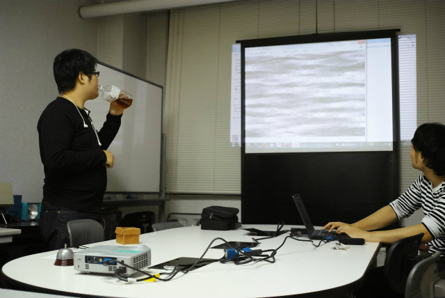

| ・口頭発表準備 (H26.10.22) | |||
第92期 日本機械学会流体工学部門 講演会でA井くんが発表に行くので、最終の口頭発表練習をしておきました。良いプレゼンは充分な準備と練習です。とにかく論理整合や表記統一の確認がムーくんとtaskは得意なので、ずいぶん細かい所まで詰めることができました。 |
|||
|
さて、そろそろ |
ムーくんがタイムキーパー | ||
|
taskは細かい所chk |
元気にやっております | ||
|
聴衆 |
スタート | ||
|
スキャン中 |
スキャン完了 | ||
|
まずはムーくん |
次はtask | ||
|
1ページ目から |
まぁそうやね | ||
|
表現の統一について |
ぱっとは気付かないけど、言われると気になる | ||
|
結果のグラフについて良い質問 |
ここで補足スライドが発動するのでOK | ||
|
べた塗り問題 |
見にくいし、スクリーンに近づく | ||
|

拡大の方向で |
ノリノリ | ||
|
語句統一の指摘、さすがtask |
プレゼンはこの2人にchkお願いしよう | ||